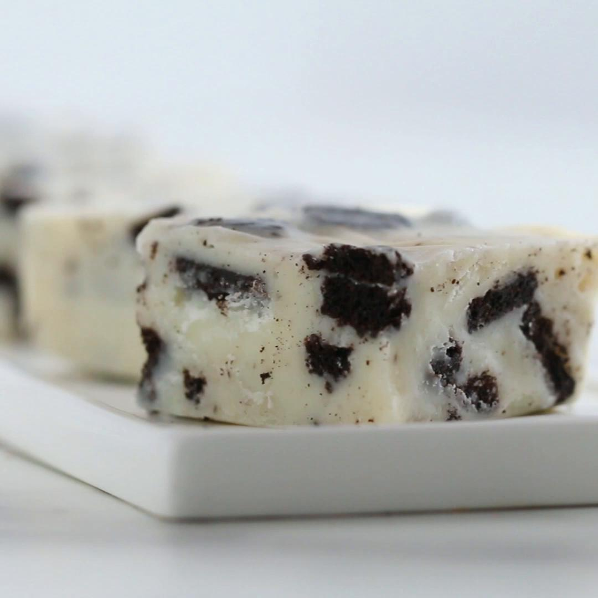

Cookies and Cream Fudge

Some delicious fudge
Ingredients
- White chocolate
- Sweetened condensed milk
- Oreos
Steps
- In a mixing bowl, combine 510g of white chocolate and 400g of condensed milk
- Heat in the microwave in increments of 15 seconds until fully melted
- Add in your chopped or crushed cookies and stir until combined
- Pour fudge mixture into a 20x20cm baking tin lined with parchment paper
- Chill for 2 hours or until fudge is firm
- Cut into bite-sized pieces
- Enjoy!